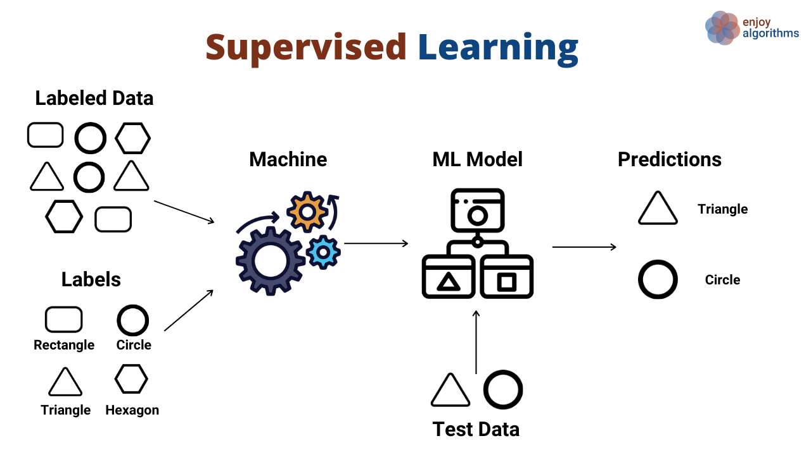
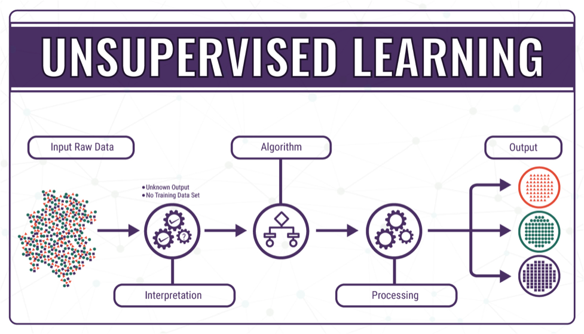

Machine Learning Basics
What is Machine Learning?
Machine learning is a subset of artificial intelligence that focuses on the development of algorithms and models that enable computers to learn from and make predictions or decisions based on data. It has applications in various fields, including healthcare, finance, and natural language processing.
Types of Machine Learning
Machine learning can be categorized into three main types: supervised learning, unsupervised learning, and reinforcement learning. Each type has its own set of techniques and use cases. In supervised learning, the algorithm is provided with a labeled dataset, meaning that each input data point is associated with a corresponding output or target label. The primary goal of supervised learning is to learn a mapping from the input data to the output labels, enabling the algorithm to make predictions or classifications on new, unseen data accurately. This type of learning is akin to a teacher supervising the learning process, providing guidance and feedback. Supervised learning finds application in numerous domains, including image and speech recognition, natural language processing, and predictive modeling, such as predicting stock prices or diagnosing medical conditions. Unsupervised learning, in contrast, operates on unlabeled data, where the algorithm's objective is to discover hidden patterns, structures, or groupings within the data without prior knowledge of what these patterns might be. It is a form of learning that thrives on uncovering the inherent organization within data autonomously. Unsupervised learning techniques include clustering, dimensionality reduction, and generative modeling. Practical applications of unsupervised learning span diverse fields, from customer segmentation and anomaly detection in data security to recommendation systems and exploratory data analysis. Reinforcement learning takes a fundamentally different approach from supervised and unsupervised learning. It is a type of learning that revolves around decision-making in dynamic environments. In reinforcement learning, an agent interacts with an environment and learns through trial and error, receiving rewards or penalties based on its actions. The agent's objective is to maximize cumulative rewards over time by discovering optimal strategies or policies. This type of learning is often likened to training a pet or teaching a computer program to play games autonomously. Reinforcement learning is prevalent in robotics, autonomous systems, gaming, and optimization problems, where the agent must learn how to make sequences of decisions to achieve specific goals.
 
Benefits of Machine Learning
Machine learning has revolutionized industries by automating tasks, improving decision-making processes, and uncovering valuable insights from large datasets. It has the potential to drive innovation and solve complex problems.
Resources
Machine Learning Frameworks
| Framework | Description | Language |
|---|---|---|
| TensorFlow | Open-source machine learning framework developed by Google | Python |
| PyTorch | Deep learning framework developed by Facebook's AI Research lab | Python |
| Scikit-Learn | Simple and efficient tools for data mining and data analysis | Python |